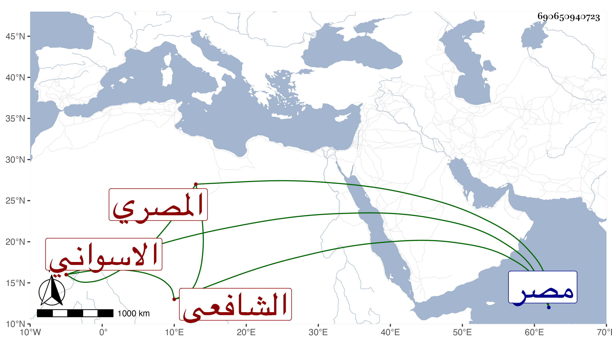

0902Sakhawi.DawLamic.ITO20230111-ara1.EIS1600.690650940723
Biography ID: 690650940723
670
محمد بن عمر بن عبد العزيز بن عمر بن عبد العزيز الشمس ابو اليسر بن الفخر الاسواني المصري الشافعي ويعرف بابن المفضل . نشأ بمصر فاشتغل قليلا ولازم البرهان العجلوني والنعماني وسمع الحديث على غير واحد ثم لازمني في الإملاء وقرأ على أشياء وتكسب بالشهادة بل ناب عن العلاء بن الصابوني في البيمارستان وغيرها وكذا ناب في القضاء وحج غير مرة وجاور وسمع بها في رجب سنة سبعين على التقي بن فهد وكان فيه تودد ولم يظفر بطائل . مات في سنة ست وثمانين أو بعدها وأظنه جاز الاربعين عفا الله عنه ورحمه .
